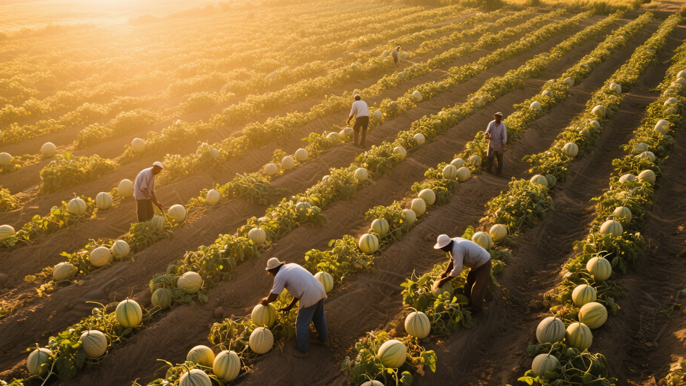
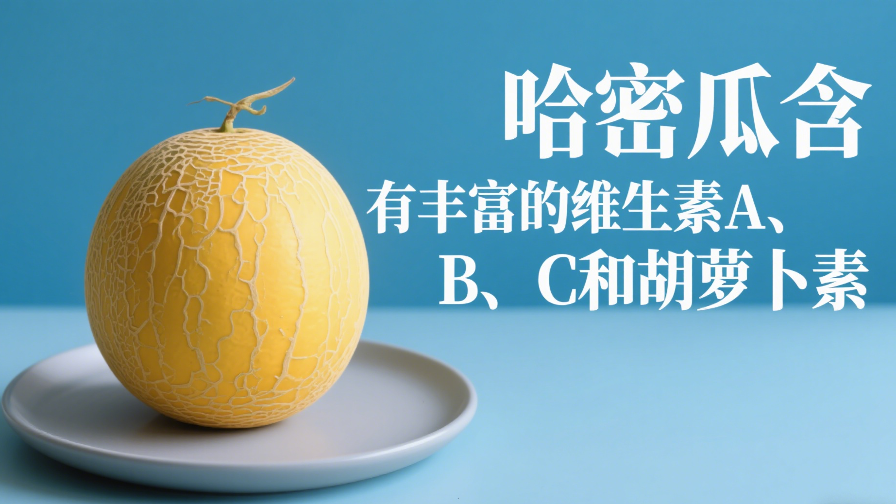
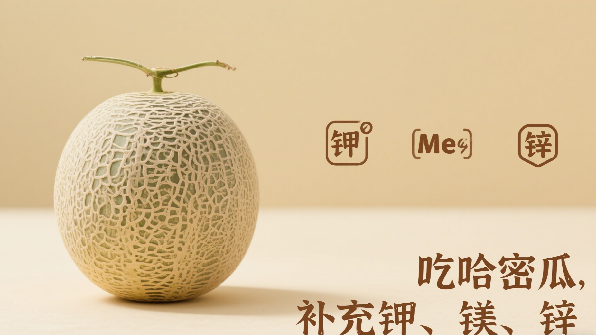

历史传承
哈密瓜的种植历史可追溯至2000多年前的汉代，是丝绸之路上的重要贡品。因产于新疆哈密地区而得名，曾是历代皇室贡品，被誉为"瓜中之王"。

哈密瓜种植基地
金黄色的瓜肉
种植特色
独特气候
昼夜温差大，日照充足，干燥少雨，这种气候条件使得植物在白天能够充分进行光合作用，积累大量的养分，而夜晚温度降低，呼吸作用减弱，养分消耗减少，有利于果实中糖分等营养物质的积累，从而提升了果实的口感和品质。
同时，干燥少雨的环境还能有效减少病虫害的发生，降低农药的使用量，保证了农产品的绿色健康。
土壤条件
富含矿物质的沙质土壤，排水性好。沙质土壤颗粒较大，孔隙度高，透气性佳，有利于植物根系的生长和呼吸，能够促进根系向深处发展，增强植物的抗倒伏能力和对养分的吸收能力。
而且土壤中丰富的矿物质可以为植物提供全面的营养元素，满足植物在不同生长阶段对各种营养的需求，使植物生长更加茁壮，果实的营养价值也更高。
灌溉技术
采用滴灌技术，节约水资源。滴灌是一种精准的灌溉方式，能够将水直接输送到植物根部，避免了传统灌溉方式中水的大量浪费，提高了水的利用效率。
同时，滴灌可以根据植物的需水情况精确控制灌溉量，保证植物在生长过程中始终处于适宜的水分环境中，既不会因缺水而影响生长，也不会因水分过多而造成根系腐烂等问题，有助于提高植物的产量和质量。
人工授粉
精细化管理，确保果实品质。人工授粉可以有效提高授粉的成功率，避免自然授粉过程中可能出现的花粉不足、授粉不均匀等问题。
通过人工授粉，能够使果实的种子发育更加饱满，果实的形状更加规整，大小更加均匀，从而提高果实的外观品质。此外，人工授粉还可以增加果实的产量，提高经济效益，是实现农业精细化管理、提升农产品品质的重要措施之一。
营养价值

丰富维生素
含有丰富的维生素A、B、C和胡萝卜素

矿物元素
富含钾、镁、锌等多种矿物质元素